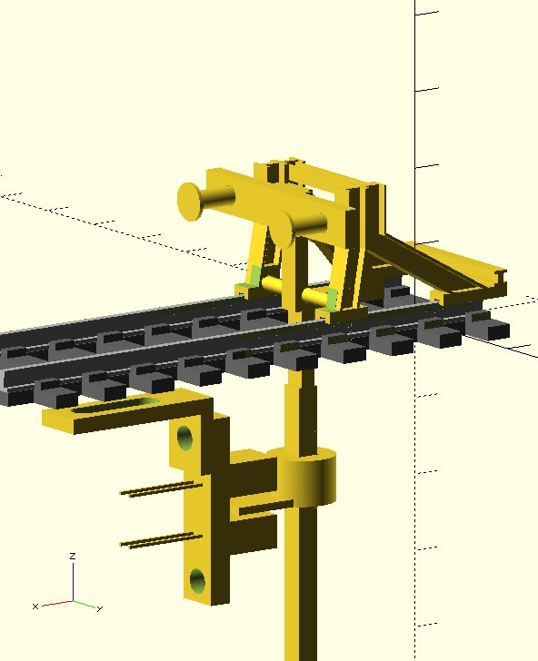
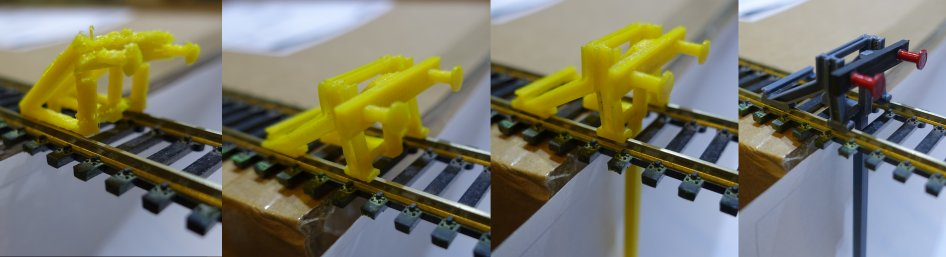
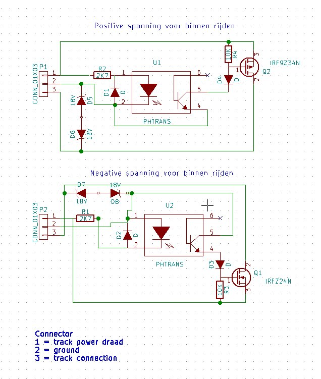
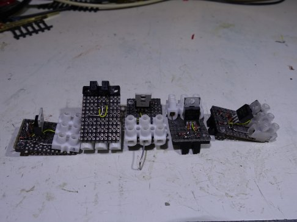
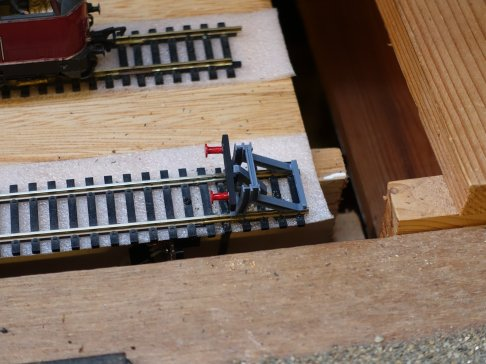
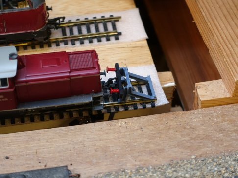

I started this project thinking that designing a endstop would not take that much time. So I started
with a simple design and started printing it in one go. But it failed miserably. The support was nog generated at the locations
required. Then I started to generate multiple parts that can be printed without support.
The next problem was operating the end stop. How can the locomotive interrupt its powersupply? Couple options:
Mechanical this is to heavy.
Magnatic but that would require a magnet at a precise location for each locomotive.
Optical which can be operated with little force.
So I used a infra red optical interrupter. Since it is located under the track I don't have issues with sunlight.
This is the final design:

Here is a photo from the different versions that I made in order to get the design right.

Here is the schematic. I designed 2 versions. One for postive voltage and one for negative it just depends where the endblock will be located in the track in forward or reverse direction. It interrupts the current when operated
but if you reverse you can drive out without problems the diode in the mosfet will take care of it. The 2 zeners are for protection
of the mosfet. The reverse diode in the mosfet will not open when operating inductive loads which is typically the case.

And here is a photo of the electronics. It is just made with from a simple breadboard.


If the endblock does not return to its default location it is possible to add some weight at the end of the interrupter pin, however this is usually not nessecarry.
